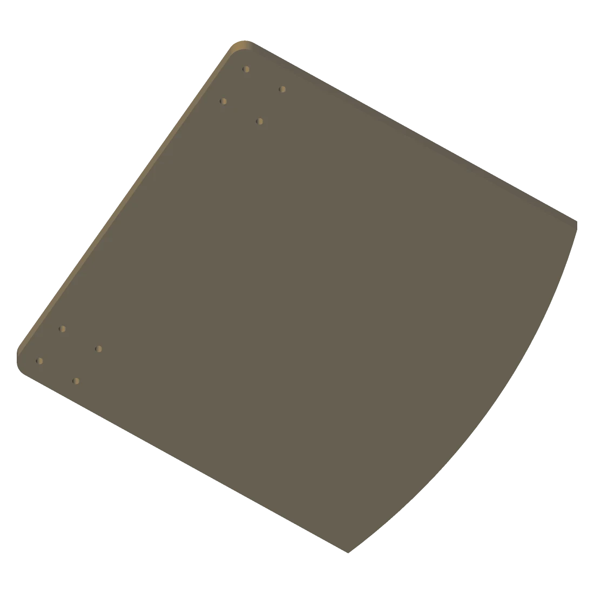
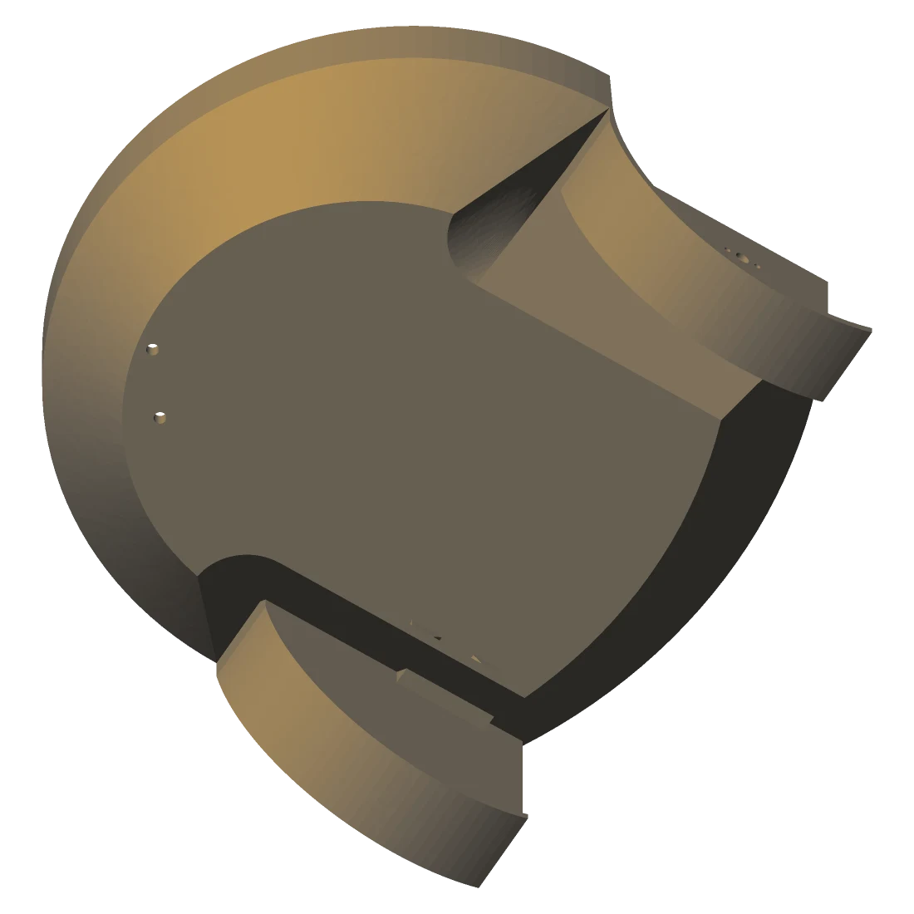
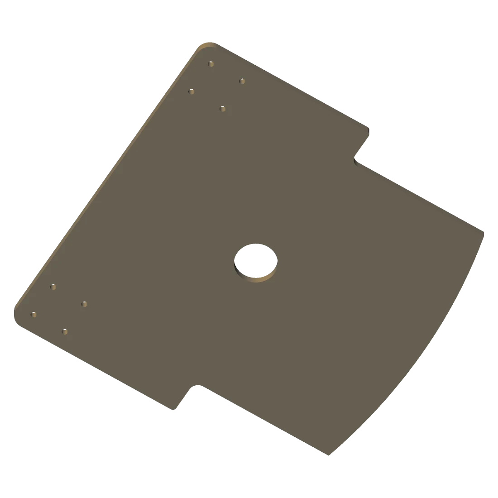
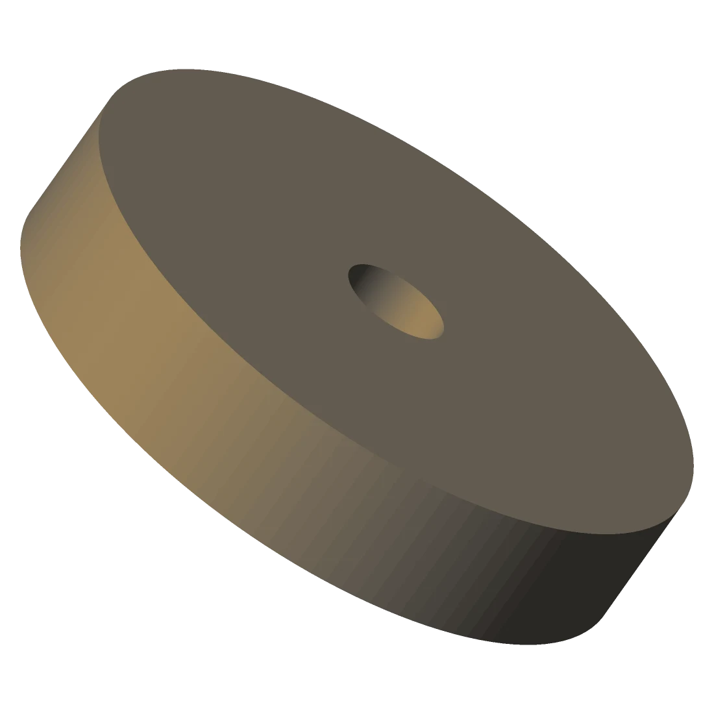
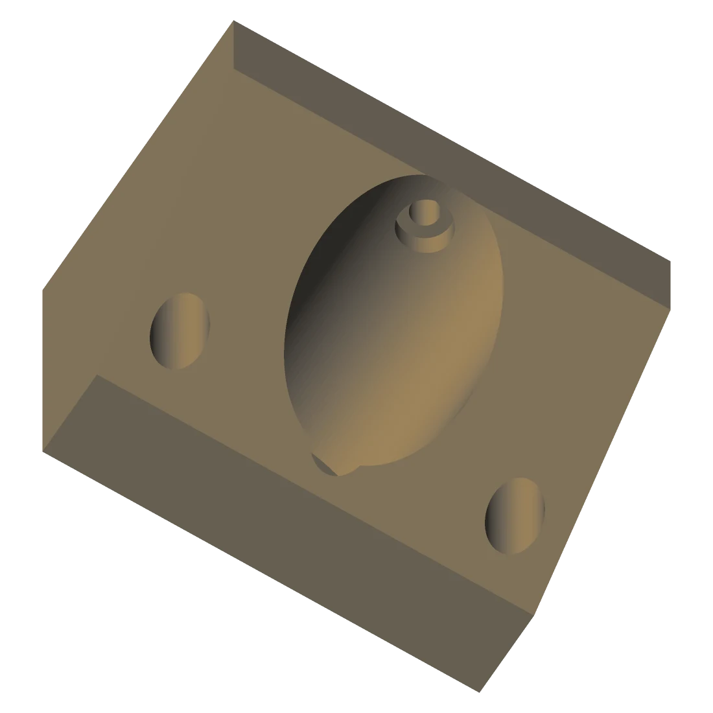
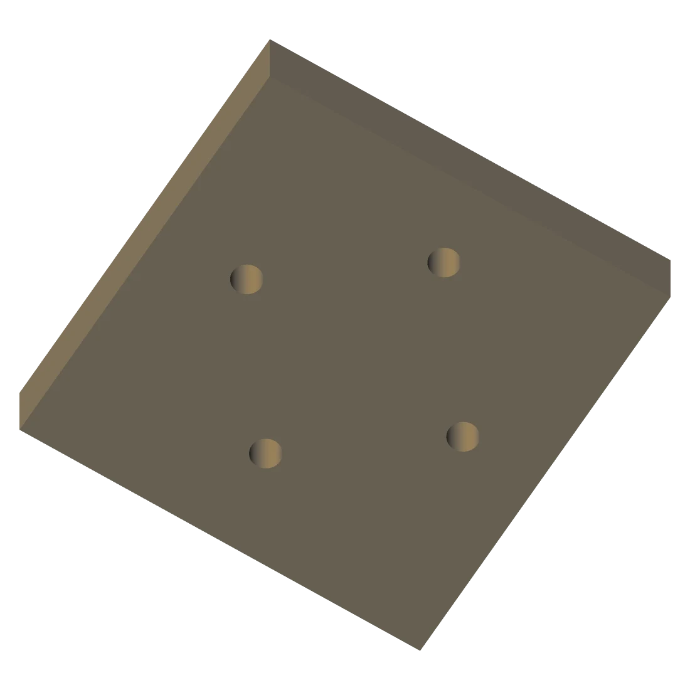
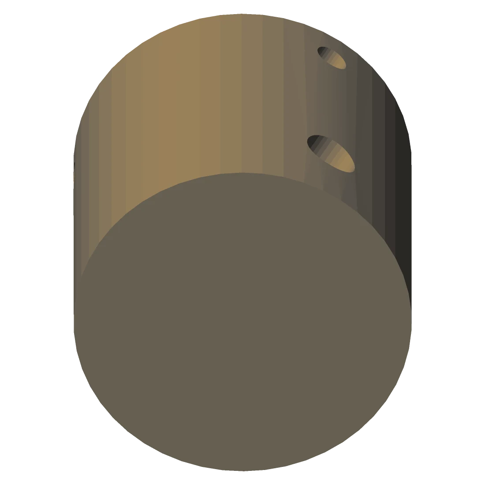
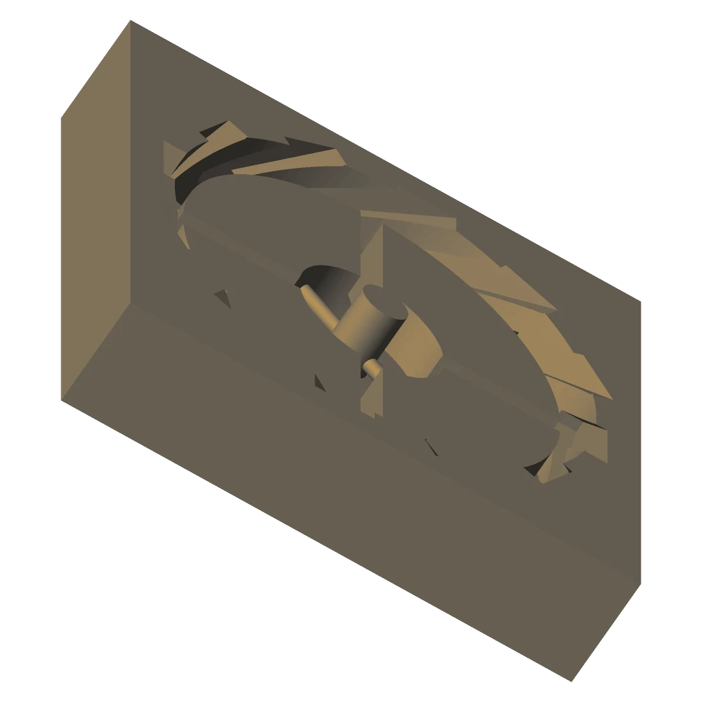

Chassis body
Iteration 4 — the shell the drivetrain and boards mount into.
380 × 380 × 41 mm6 156 facets
Zana — Swahili for tools — is an open-hardware line for the physical world: reference designs for the machines a home or business runs on. The first is an autonomous robot mower with an inductive charging dock. FreeCAD bodies, KiCad boards, and a wireless-power model whose every published number is re-derived by CI.

This is recovered prototyping work, not a kit. Some of it opens in FreeCAD and prints today; one part of it runs and is covered by tests; one part is source nobody has ever compiled. Every row says which — because the fastest way to waste someone's weekend is to let them find out after they've cleared the bench.
| Area | Contents | State |
|---|---|---|
| Chassis & body | FreeCAD bodies across four iterations (mower/mowbot*.FCStd), wheels, casting moulds, motor supports |
Design files |
| Drivetrain | Shafts, couplers including an aluminium variant, GT2 pulley, castor fitting | Design files |
| Electronics | KiCad projects — TRANSMITTER (thru-hole and SMD), MAINBOARD, EMF_SENSOR, RAIN, plus a shared symbol library |
Design files |
| Wireless power | An inductance and efficiency model for the charging link, in Python — the one executable engineering study here | Runs · tested |
| Simulator | C++ (raylib + Bullet, native and WASM) and PyBullet sources for driving over grass | Source only |
| Fabrication rigs | The coil winder, PCB mill and UV exposure box built to make the electronics | Design files |
| Firmware | — | Not here |
Every part below is rendered from the mesh tracked in this repo — the same
.stl you would slice — and the dimensions are its real bounding box,
measured at render time by site/gen_renders.py. Nothing here is an
illustration of a thing that doesn't exist.

Iteration 4 — the shell the drivetrain and boards mount into.

The deck that the motors, castor and coil receiver bolt onto.

Printed hub and tread, cast from the two-part mould below.

Bracket for the main drive gearmotor, bored for the shaft and its fixings.

The front swivel mount — the mower's third point of contact.

Motor-to-shaft coupling. Printed, with an aluminium variant for the load path.

Two-part mould for casting the tyre — the tooling ships with the part.
The previous shell. Kept deliberately — on a hardware project the design history is the documentation.
The mower charges by induction, so there is no connector to corrode in wet grass.
mower/coil-study/ models the link from first principles — elliptic
integrals for Maxwell mutual inductance, AC resistance with skin and proximity
effects, and the k·Q efficiency solve — for a 200 mm coil
at 40 kHz across a 40 mm air gap.
Option 2 wins because it is the same 223.8 mm across as the simple coil and only
1.5 mm thick, but buys 5.9 points of efficiency for one extra winding
operation. And these numbers are not decoration:
tests/test_coil_physics.py parses the comparison table out of
DESIGN_SUMMARY.md and re-derives every cell from
physics.py, then checks the model's own invariants — reciprocity,
monotonicity, efficiency bounds. The write-up and the model cannot drift apart
without CI going red.
The copper beside this text is not an illustration — it is the
RAIN board's own plot, re-cut from
mower/PCB/RAIN/output.svg. An interdigitated comb electrode: rain
bridges the fingers, conductivity rises, the mower goes home.
These boards were not ordered from a fab. The repo also carries the coil winder, the PCB mill and the UV exposure box that were built to produce them — which is the part of a hardware project nobody photographs and everybody needs.
.FCStd files in mower/. Those are the editable sources; the .3mf and .stl exports beside them are for slicing, and .step for any other CAD package.mower/PCB/. EMF_SENSOR_DIP ships a panelised board and a script for milling it yourself..3mf/.stl meshes. The wheel is cast in its own printed mould rather than printed solid.# most of this repo is CAD and PCB binaries no CI can # meaningfully verify — what IS checkable is checked $ pip install -r requirements-dev.txt $ python3 -m pytest -q
Re-derives every number in the coil write-up from the model, and checks reciprocity, monotonicity and efficiency bounds.
Every path named in a README exists; no tracked file is an empty husk; every shell script parses; every Python file compiles.
This page resolves every local reference, fetches nothing off-box, and cannot claim the simulator works.
Each gate asserts its own coverage count, so it cannot pass by checking nothing.
Zana devices are meant to drop straight into Aql, the open-source command center — but the designs are open and vendor-neutral, so they work with any compatible control plane. You are not buying into anyone's cloud by printing a wheel.
Zana is part of Vulos, and never requires Vulos infrastructure to run. The designs are files in a git repository under an MIT licence: clone them, edit them, fabricate them, sell what you make. There is no account, no activation and nothing to phone home to — a bracket cannot be deprecated.